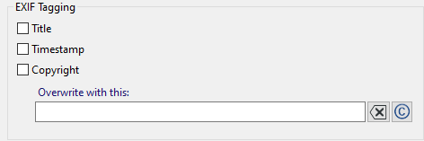

Overview
ImageResize 3.4 is an app for scaling of JPEG and PNG images. Its for web image galleries creation and bulk processing.
Contents
OverviewSource Images
Sizes
Target Folder
Renaming and shuffle
Watermark
Quality
Tagging
Saving and Loading
Settings
Commandline Parameters
Watermark Editor
Features
- Context-sensitive help system
- Scaling (shrinking) of many image files
- Each image to multiple sizes
- Uses different interpolations for good results
- Optional Watermarking
- EXIF Tags (Title, Timestamp, Copyright)
- Supports JPEG and PNG
- Controls compression quality
- GUI, CLI and API interface available
- Controlled file renaming
- Optional random file shuffle
Non-Features
- No other transformation than isometric scaling
- No format conversion, PNG stays PNG and JPEG stays JPEG
- No Preview
Overview
The app needs at least these 3 informations:
- A list of image files or a folder and a wildcard

- A target size

- A target folder

After that press  to start the resampling.
to start the resampling.
Source Images
ImageResize can resample many files at once. The list contains path/filename an can
- be manually entered
- selected with a dialog
 with <CTRL> and <SHIFT>
with <CTRL> and <SHIFT> - be completed by dragging files from the Windows explorer
- be a folder with one or more wildcards
- have relative paths
The list can contain JPEG and PNG files. The file names can be retained or renamed. Relative paths refer to the working directory of the program, which is created after loading or saving a Project file (.irs) is the path to this.
ContentsSizes
A size in pixels refers to the longer side of an image. Usually the size of the original file is larger than that of the target.
ImageResize can produce multiple sizes for each image. Enter a list of sizes,
separated by a comma, or select sizes from the suggestions.

You can specify any size greater than 0. The suggestions under the list are non-binding.
You can change the list by using the delete button  click. To delete a single size, first select the size or click one
already selected suggestion again.
click. To delete a single size, first select the size or click one
already selected suggestion again.
Target folder
A target folder must be specified. You can type it directly
or select with the  button.
button.
To avoid target name conflicts when multiple target sizes are specified, you can either create different file names with Rename, or by each size containing its own target folder. The name of the target folder must contain the placeholder %SIZE%.
ContentRename and shuffle
Renaming the target files becomes interesting if you don't want to create a separate folder for each size, but rather want to pack all files into one folder. Then the target files have to be renamed, best by containing the target sizes for differentiation.
Click Apply and choose one of the possible strategies:
Strategy "Simple"
The simple filename template produces names like this: img085.jpg. File numbering starts at 1 and does not include the size. Then it is necessary to create a separate folder for each size. Therefore insert the placeholder %SIZE% into the target directory name template.
The file name template in the simple case is img%INDEX:1,3%.%FILEEXT%. The INDEX is the 0-based sequential number of the source file in the list. The numbers 1 and 3 after the INDEX keyword mean that the index starts at 1 and 3 will contain digits with leading zeros.
Strategy "Advanced"
The file name template in this case is, for example, img%INDEX:1,3%_%SIZE%.%FILEEXT%, to create all files in the same directory. It creates a file name like img085_1920.jpg. The file name conflict is avoided by using the %SIZE% placeholder.
Strategy "Custom"
To have the program generate a suitable file name, you can here provide your own template. The template contains placeholders for special values that are created and inserted during processing.
Examples of valid templates in the case where the resulting filenames do not create a conflict for different sizes in the common directory, could look like this:
img%INDEX:1.3%_%SIZE%.%FILEEXT%
results e.g. img012_1920.jpg
%FILENAME%_%SIZE%.%FILEEXT%
results.e.g. DSC3240_1920.jpg
Available placeholders
| %FILENAME% | This is the original file name, without the extension. |
| %FILEEXT% | The extension of the original name without the period. You cannot change the format of the target file by changing the extension. This could confuse image viewers. |
| %INDEX:N,D% |
The 0-based index (sequential number) of the file in the list. N is an offset. Lists usually start with the number 1, but by specifying an offset you can expand existing lists. D is the number of digits of the resulting number, which if necessary, receives leading zeros. This allows the correct lexical order. |
| %SIZE% | The target size in pixels of the current file. |
| %FILTER% | The name of the currently selected interpolation filter. |
Shuffle
Shuffling means that the lexical order of the target file names is random.
ImageResize first mixes the order of the images before producing the resampled images. This only makes sense if the target file name contains the index of the image at the beginning of the variable part of the name so that the lexical order is ascending. A suitable template for the target name is, for example, img%INDEX:1,3%.%FILEEXT%.
The Seed parameter controls the random sequence. A seed of 0 will produce a different sequence each time the processing is started. Any other constant value will shuffle the sequence in the same way, as long as the length of the image list does not change.
Watermark
A watermark is a semi-transparent small image that, for example, adds a copyright to the target image. The image must be in PNG format and can have an alpha channel (transparency). If that, when an image is printed, additional transparency can be specified. 20 to 30 percent is good for a slightly visible appearance, from 50 percent the watermark becomes clearly visible.
Apply
Select this option to activate the watermark.
Filename
Specify a filename of a PNG file whose image will be scaled into each target image.
Normally it is sufficient to specify a common file for all target sizes because the size is adjusted for each image. Therefore it is ok to use a high resolution watermark image once to create for everyone.
To set a different water image for each target size, you must specify the placeholder %SIZE% in the name of the watermark file. In this case, ImageResize expects a watermark file for each size, its name corresponds to the template, i.e. contains the size.
You can create a watermark file with any program that supports the PNG format. Some suggestions:
- Inkscape - a free vector graphics editor
- Gimp - a free raster graphics program
- Greenfish Icon Editor - a graphical raster image editor
- with the built-in watermark editor
You can use transparency, but note that ImageResize will add transparency on top of it.
Transparency
A transparency of 0 percent makes the water image disappear, while 100 percent makes it fully opaque. 40 percent is a good choice.
| 10% |  |
20% |  |
| 30% |  |
40% | |
| 50% |  |
60% | |
| 70% |  |
80% |  |
| 90% |  |
100% |  |
Horizontal position
The position is given as a percentage of the available space and is counted from the top left.
0 percent is left-aligned, 50 percent is centered, and 100 percent is right-aligned.
Vertikale Position
0 Prozent ist ganz oben, 50 Prozent ist vertikal zentriert, 100 Prozent ist ganz unten.
InhaltQualität
Die Qualität des Ergebnisses hängt von diesen Einstellungen ab. Sie können den Kompressionsgrad für JPEG- und für PNG-Formate und den Resampling-Algorithmus steuern.
Resampling
Resampling means building a new image with smaller or larger ones Dimensions with the same aspect ratio. To do this, the colors of the pixels of the target image must be determined by interpolation. In the simplest case - stretch (without interpolation) - the pixel gets the color value of the next pixel of the original. this leads to Loss of information and quality when reducing and poor quality Enlarge.
There are 11 resampling algorithms available. Apart from the simple Stretch, the algorithms are interpolations. Depending on the scale, they have different effects.

Take a look at the effect of different interpolations.
JPEG quality
JPEG has a lossy process. A higher quality results in larger files. For JPEG, 75 to 95 percent is a good choice.

PNG quality
The PNG format compresses losslessly, but results for nature images in a low compression, so it is mainly useful for artificial images. There are 4 degrees of compression available:
- none - no compression
- fastest - low and fastest compression
- default - normal compression
- maximum - highest and slowest compression

Content
Tagging
You can write certain meta information of your images into the generated images. Normally meta information for photos (e.g. JPEG) is saved in EXIF format within the file. Most cameras store a lot of technical information in the JPEG files they generate.
Tagging means that you can add certain tags to the images created with ImageResize to provide information. It is supported by ImageResize for two reasons:
- To maintain your copyright when sharing images
- As the basis for a Slideshow (automated image viewer)
The following meta information (Tags) is supported:
-
Title
A brief description of the image content as it would be rendered by a viewing program. The title is stored as the EXIF tag ImageDescription.
-
Timestamp
The date a photo was taken.
-
Copyright
The copyright tag consists at least of the parts copyright symbol © or (c), the year and the author. E.g. “© 2024 Mogli Maisenkeyser, www.atomek.de”. Attach a web domain to leave no doubt.
In the Tagging parameter dialog you can select which of the tags mentioned should be included in the target images. The copyright entries for all images can be overwritten with a new character string.
Preparing to tag your images
There are two ways to tag the created copies:
1. Expand the original files with EXIF meta information
This only works with JPEG images, but not with PNG images. You can use external programs for this:
- Using the properties dialog in Windows Explorer. In the "Details" tab you can use the tags Title, Change date of creation and Copyright in the originals.
- Use of a third-party program - e.g. ExifTool or RawTherapee
2. Preparing the tags in .tags files
Using any simple text editing program, such as Windows Notepad (notepad.exe), write a list of tags and save the UTF-8 encoded file in the directory with the original files under the name “.tags”. If you have multiple directories with images, put a .tags file in each directory.
A .tags file is a CSV (comma separated list) file with UTF-8 encoding. The title bar contains the names of the columns (Filename, Title, Timestamp, Copyright). Below is a line for each image with the fields corresponding to the header line.
Filename, Title, Copyright DSC04262.jpg, Sanitas Laboratories, (c) 2023 ATOMEK DSC04264.jpg, lighthouse at the harbor, (c) 2023 ATOMEK DSC04288.jpg, "Trip home through the mudflats, wonderful", (c) 2023 ATOMEK
You can use any column headings, but only the following are used by ImageResize: Filename, Title, Timestamp and Copyright.
The first column must be called "Filename" and contains the name of the file without the path. The order of the other columns and the order of the rows are insignificant. If you want a field to contain commas or leading spaces, enclose the field in double quotation marks.
If you create multiple .tags files in different directories, they do not have to be structured the same. They can have different column names.
Create a list of all tags (TagsReport)
In the Tagging parameter dialog you can instruct ImageResize to create a UTF-8 encoded text file with a list of known tags. Tagging is a prerequisite. The .tags files are then read, if necessary completed with EXIF metadata and finally saved as one large table.
Such a file can form the basis for a slideshow generator. The next release of ImageResize will include an HTML slideshow generator tool.
If a field contains the asterisk (as the only character), the field value is taken from the previous.
Tagging Dialog
Tags Source

You can explicitly specify the sources of the tags. This gives you more control over where the tags come from. Usually the program itself detects which source is required. If you don't provide a source, EXIF is assumed.
If you have saved .tags files to the original files and would like to use them, for example for the tags report, you must click the “Search for .tags files” checkbox.
EXIF Tagging
Here you select which tags should be included in the generated images as EXIF tags. The image title is stored in EXIF field "ImageDescription". You can override the copyright tag for all generated images.
If you specified both EXIF and .tags files as the source, the .tags files take precedence. The EXIF meta information of the original files are only used if the .tags files have no fields defined for the file in question.
Tags Report

At the end of the creation of the image files, a list of all identified tags can be saved. The file will UTF-8 encoded and saved as a CSV file. Example:
Filename, Title, Copyright DSC04262.jpg, Sanitas Laboratories, (c) 2023 ATOMEK C:\Images\DSC04264.jpg, lighthouse at the harbor, (c) 2023 ATOMEK C:\Images\DSC04288.jpg, "Trip home through the mudflats, wonderful", (c) 2023 ATOMEK
The file created will one day serve as the basis for the slideshow afterburner.
Open and save project files

You can save the current settings as a project with the .irs extension. These are simple text-based INI files.
When opening a project file, the current directory is set to the directory of the project file. This allows you to specify path information relatively and the project with Its image references becomes movable.
You can adjust how far ImageResize alerts you to save your settings. In the most convenient case, ImageResize always automatically saves the current settings.
You can change this behavior in the Settings dialog.
ContentSettings
With  you come to the dialog with global settings.
you come to the dialog with global settings.
Threads
ImageResize can make better use of the system's computing power through multi-threading.
Single means that only one core is used - processing becomes correspondingly slow.
You can go up to the total number of available cores (=Maximum).
This can multiply the processing speed, e.g. 5-fold with 12 hyperthreads instead of just one.
In systems with Hyperthreading, the number of virtual cores is higher than the number of physical cores. If you have 12 cores, only 6 of which are physical, that results in the use of 12 threads Compared to 6 threads, the processing speed only increases by around 8 percent.
Stop on error
This option signals the threads to terminate as soon as possible. This can be the case There is a slight delay in using multiple cores.
ContentBehavior
This setting controls the behavior of the application to avoid data loss.
- Standard - Queries about saving without automatic backup of the settings
- Comfortable - No questions about saving, but security through automatic saving
- Neurotic - Questions about saving and automatic backup
- Chuck Norris - No questions asked, no automatic backup
Commandline Parameters
These refer to the graphical application ImageResize.exe. There is also the command line program imgres.exe with significantly more options.
filename.irs
You can have ImageResize load an .irs file on startup by passing the filename as a command line parameter. This allows the ImageResize application to be associated with the .irs extension in the Control Panel.
-A or -AUTOSTART
Makes ImageResize automatically press the Execute button at startup.
-X or -AUTOEXIT
Causes the application to close automatically after processing is finished.
-L EN or -LANGUAGE EN
The application is developed for the English language, but there is a German localization that automatically appears on German systems. This behavior can be prevented with the switch.
To have ImageResize automatically resample a list of images, first save a suitable .irs file and then start the program with these command line parameters:
C:\Program Files\ImageResize\ImageResize.exe C:\mylist.irs -A -X
ContentWatermark Editor
With  you can use the built-in
watermark editor. This simple dialog lets you create a watermark image with some
useful decorations.
you can use the built-in
watermark editor. This simple dialog lets you create a watermark image with some
useful decorations.
The preview shows you what the watermark will approximately look like, but without the additional transparency that you can specify in the watermark settings.
To get an impression of what your watermark looks like on a dark or light background,
press one of these buttons 


With these buttons you can save the dialog settings as a .was file and load it again later. The generated PNG image of the watermark is saved next to the .was file.
You can save your current favorite settings without a file name Save favorites and easily retrieve them later.
| Text |
Enter the line of text that should be displayed in the watermark here. The © symbol with
<ALT> <0> <1> <6> <9> or with that
 button. button.
|
| Font |
Choose a font with the size in points, a font name in quotation marks, and optionally the styles Italic and
Bold or select a font in the  dialog.
The quality of the watermark depends on the font size. 12pt creates a coarse pixel watermark, 48pt creates one
more accurate illustration. The font size has no influence on the later display in the image, as its size is determined by the watermark settings
of the main window. dialog.
The quality of the watermark depends on the font size. 12pt creates a coarse pixel watermark, 48pt creates one
more accurate illustration. The font size has no influence on the later display in the image, as its size is determined by the watermark settings
of the main window.
|
| Font color | Select the character color (foreground). |
| Outline | The font receives a fine outline with the selected color. |
| Outline color | Color of the fine outline. |
| Shadow | Allows the font to have a blurred background that glows or appears like a shadow, depending on the color. |
| Shadow Color | Select the color of the blurred background. |
| Blur | This creates a glow or shadow around the writing to contrast the watermark image with the improve background. Select a width of the highlight or shadow in pixels. The effective width also depends on the font size. |
| Quality | Controls the way the shadow appears. Try out the possible settings Normal, Disk, Corona, Precise, Fast and Box. Precise is a very thin shadow, like an outline. |
| Ok | After a watermark has been defined, it must first be saved as a PNG file, or must be previously loaded from a file. Only then Ok becomes available. |
| Cancel | Closes the dialog without using the file. |